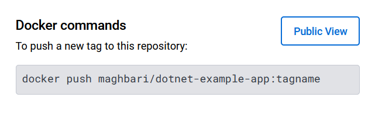

Now that we've built an image, let's share it! To share Docker images, you have to use a Docker registry. The default registry is Docker Hub and is where all of the images we've used have come from.
Create a Repo¶
To push an image, we first need to create a repo on Docker Hub.
-
Go to Docker Hub and log in if you need to.
-
Click the Create Repository button.
-
For the repo name, use
dotnet-example-app. Make sure the Visibility isPublic. -
Click the Create button!
If you look on the right-side of the page, you'll see a section named Docker commands. This gives an example command that you will need to run to push to this repo.

Pushing our Image¶
-
In the command line, try running the push command you see on Docker Hub. Note that your command will be using your namespace, not "docker".
plaintext $ docker push maghbari/dotnet-example-app The push refers to repository [docker.io/maghbari/dotnet-example-app] An image does not exist locally with the tag: maghbari/dotnet-example-appWhy did it fail? The push command was looking for an image named maghbari/dotnet-example-app, but didn't find one. If you run
docker image ls, you won't see one either.To fix this, we need to "tag" our existing image we've built to give it another name.
-
Login to Docker Hub by either clicking on the "Sign In" button in Docker Desktop or using the command
docker login -u YOUR-USER-NAME. -
Use the
docker tagcommand to give thegetting-startedimage a new name. Be sure to swap outYOUR-USER-NAMEwith your Docker ID.bash docker tag dotnet-example-app YOUR-USER-NAME/dotnet-example-app -
Now try your push command again. If you're copying the value from Docker Hub, you can drop the
tagnameportion, as we didn't add a tag to the image name. If you don't specify a tag, Docker will use a tag calledlatest.bash docker push YOUR-USER-NAME/dotnet-example-app -
The common practice when tagging images is to add the version number of the image before pushing it as the following:
bash docker tag dotnet-example-app YOUR-USER-NAME/dotnet-example-app:1.0 docker push YOUR-USER-NAME/dotnet-example-app:1.0
Running our Image on a New Instance¶
Now that our image has been built and pushed into a registry, let's try running our app on a brand new instance that has never seen this container image! To do this, we will use Play with Docker.
-
Open your browser to Play with Docker.
-
Log in with your Docker Hub account.
-
Once you're logged in, click on the "+ ADD NEW INSTANCE" link in the left side bar. (If you don't see it, make your browser a little wider.) After a few seconds, a terminal window will be opened in your browser.

-
In the terminal, start your freshly pushed app.
bash docker run -d -p 8088:80 YOUR-USER-NAME/dotnet-example-app:1.0You should see the image get pulled down and eventually start up!
-
Click on the 8088 badge when it comes up and you should see the app with your modifications! If the 8088 badge doesn't show up, you can click on the "Open Port" button and type in 8088.
Recap¶
In this section, we learned how to share our images by pushing them to a registry. We then went to a brand new instance and were able to run the freshly pushed image. This is quite common in CI pipelines, where the pipeline will create the image and push it to a registry and then the production environment can use the latest version of the image.